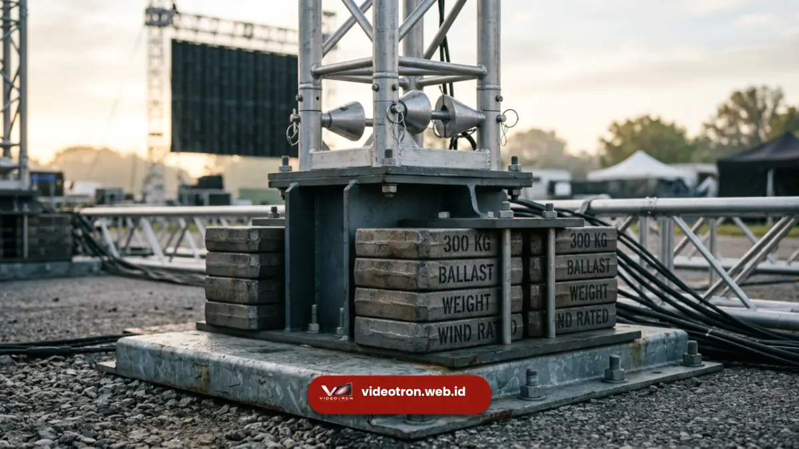

Pahami kapasitas beban dan standar keamanan ground support videotron sebelum event Anda. Konsultasi teknis gratis di videotron.web.id
Kapasitas beban ground support videotron menentukan seberapa tinggi dan seberapa besar layar videotron dapat dipasang dengan aman pada rangka berdiri di atas tanah.
Perhitungan ini mempertimbangkan berat panel, tinggi struktur, dan gaya angin yang bekerja pada rangka selama event berlangsung.
Memahami aspek ini penting sebelum menentukan spesifikasi instalasi videotron untuk acara Anda.
- Kapasitas beban ground support ditentukan oleh berat panel videotron, tinggi rangka, dan sistem pemberat yang digunakan.
- Faktor angin menjadi salah satu pertimbangan utama dalam menjaga kestabilan struktur ground support outdoor.
- Standar entertainment technology seperti ANSI E1.21 umumnya menjadi acuan industri dalam menentukan faktor keamanan struktur sementara.
- Pengujian struktur sebelum event berlangsung membantu memastikan videotron terpasang secara aman selama acara.
Apa Itu Kapasitas Beban pada Ground Support Videotron?
Kapasitas beban pada ground support videotron adalah batas maksimum berat dan gaya yang dapat ditahan oleh rangka struktur tanpa mengalami kegagalan atau pergeseran posisi.
Kapasitas ini mencakup berat panel videotron itu sendiri, berat rangka, serta gaya tambahan seperti angin yang bekerja pada permukaan layar.
Perhitungan kapasitas beban umumnya melibatkan beberapa komponen, yaitu beban mati berupa berat panel dan rangka, beban dinamis berupa gaya angin, serta beban tambahan dari sistem pemberat yang digunakan untuk menjaga kestabilan.
Ketiga komponen ini dihitung secara bersamaan untuk menentukan spesifikasi rangka yang dibutuhkan pada setiap event.
Semakin tinggi videotron yang dipasang, semakin besar pula luas permukaan yang terpapar angin, sehingga kapasitas beban rangka perlu disesuaikan agar struktur tetap stabil dalam berbagai kondisi cuaca selama acara berlangsung.
Mengapa Faktor Angin Penting dalam Perhitungan Keamanan Ground Support?
Faktor angin penting dalam perhitungan keamanan ground support karena videotron berukuran besar memiliki permukaan luas yang dapat menangkap gaya angin secara signifikan, terutama pada lokasi outdoor terbuka.
Gaya angin yang tidak diperhitungkan dengan tepat berpotensi menggeser atau bahkan merobohkan struktur rangka.
Beberapa hal yang perlu dipertimbangkan terkait faktor angin:
- Ketinggian struktur videotron, karena semakin tinggi rangka, semakin besar gaya angin yang bekerja pada bagian atas struktur.
- Luas permukaan layar, yang menentukan seberapa besar tekanan angin yang diterima rangka secara keseluruhan.
- Kondisi lokasi event, seperti area terbuka tanpa penghalang angin dibanding lokasi yang terlindung bangunan sekitar.
- Prakiraan cuaca pada hari pelaksanaan, yang membantu menentukan kebutuhan pemberat tambahan sebagai antisipasi.

Pengujian keamanan struktur sebelum instalasi final.Bagaimana Cara Memastikan Struktur Ground Support Videotron Aman Digunakan?
Struktur ground support videotron dapat dipastikan aman melalui kombinasi perhitungan teknis yang tepat, penggunaan pemberat yang sesuai, serta pengujian struktur sebelum event berlangsung.
Setiap tahapan ini dijalankan secara sistematis untuk mengurangi risiko kegagalan struktur.
Langkah-langkah umum yang dilakukan meliputi:
- Perhitungan kapasitas beban berdasarkan ukuran videotron dan kondisi lokasi event.
- Penentuan jumlah dan posisi pemberat pada setiap titik outrigger rangka.
- Pemeriksaan seluruh sambungan rangka sebelum panel videotron dipasang.
- Pengujian kestabilan struktur pada kondisi angin normal sebelum acara dimulai.
- Pemantauan berkala selama event berlangsung, terutama pada acara dengan durasi multi-hari.
Selain aspek struktural, koordinasi dengan tim teknis berpengalaman turut membantu memastikan setiap tahapan perhitungan dan pengujian dilakukan sesuai standar keamanan yang berlaku di industri.
Dampak Mengabaikan Kapasitas Beban pada Instalasi Videotron
Mengabaikan perhitungan kapasitas beban dapat menimbulkan risiko serius, mulai dari pergeseran posisi rangka hingga potensi kegagalan struktur saat kondisi angin meningkat.
Risiko ini tidak hanya berdampak pada kerusakan perangkat videotron, tetapi juga pada keselamatan audiens dan kru di sekitar lokasi event.
Oleh karena itu, perhitungan kapasitas beban sebaiknya selalu menjadi bagian utama dalam perencanaan instalasi, bukan sekadar pelengkap setelah rangka selesai dipasang.

Hawa Nadira
LED Technology Consultant dan Visual Educator
Konsultan dan spesialis solusi display digital berdedikasi tinggi yang fokus membagikan panduan edukatif mengenai penerapan teknologi layar LED videotron untuk kebutuhan interior modern di Indonesia.